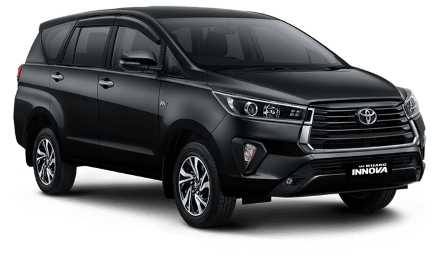
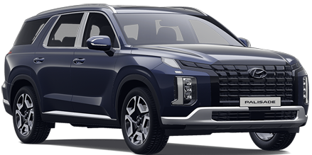
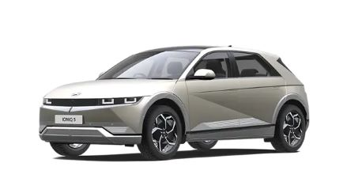
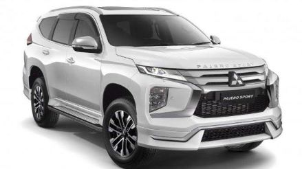
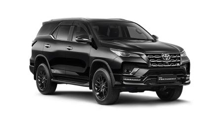

Toyota Innova Reborn
Spesifikasi Umum Toyota Innova Reborn: Mesin: Tersedia dengan pilihan mesin bensin dan diesel, seperti mesin 2.0L atau 2.4L, dengan beberapa varian daya. Transmisi: Otomatis atau Manual. Dimensi: Panjang: sekitar 4.735 mm - 4.735 mm. Lebar: sekitar 1.830 mm - 1.830 mm. Tinggi: sekitar 1.795 mm - 1.795 mm. Kapasitas penumpang: 7-8 penumpang tergantung pada konfigurasi kursi. Fitur Interior: Fitur standar seperti sistem audio, AC, koneksi USB, dan fitur keselamatan seperti ABS, EBD, serta airbags. Desain interior yang fleksibel dengan kursi lipat yang dapat disesuaikan untuk membawa barang. Fitur Eksterior: Grill depan yang berbeda tergantung pada trim level. Lampu depan LED atau lampu halogen tergantung pada trim level. Velg alloy yang berbeda ukuran tergantung pada varian. oyota Inova Reborn adalah varian dari Toyota Innova yang merupakan mobil MPV (Multi Purpose Vehicle) yang cukup populer.
Harga: Rp 471.900.000 juta
Nyundai Palisade
Spesifikasi Umum Toyota Innova Reborn Mesin: Mesin bensin V6 3.8L GDI (Gasoline Direct Injection). Tenaga sekitar 291 hp. Transmisi otomatis 8-speed. Dimensi: Panjang: sekitar 4.980 mm - 4.980 mm. Lebar: sekitar 1.976 mm - 1.976 mm. Tinggi: sekitar 1.750 mm - 1.750 mm. Jarak sumbu roda: sekitar 2.900 mm - 2.900 mm. Interior: Kapasitas penumpang: 7-8 penumpang tergantung pada konfigurasi kursi. Fitur interior termasuk layar sentuh infotainment berukuran besar, koneksi Bluetooth, konektivitas smartphone, sistem audio premium, fitur keselamatan canggih, dan banyak lagi tergantung pada trim level. Fitur Keselamatan: Berbagai fitur keselamatan seperti sistem pengereman anti-lock (ABS), airbags, kontrol stabilitas kendaraan, monitor blind spot, assisten pengereman darurat, dan fitur-fitur keamanan lanjutan tergantung pada varian dan trim level. Eksterior: Desain eksterior yang elegan dengan grill depan yang mencolok, lampu LED, velg alloy yang berbeda, dan fitur-fitur modern lainnya tergantung pada varian. Fitur lainnya: Fitur-fitur tambahan seperti sistem navigasi, sistem kamera 360 derajat, moonroof, kursi dengan pengaturan elektrik, sistem pendingin dan pemanas kursi, dan banyak lagi tergantung pada trim level. Hyundai Palisade adalah SUV berukuran besar yang menawarkan ruang yang luas, kenyamanan, dan berbagai fitur modern.
Harga: Rp 875.500.000 juta
Nyundai Ioniq 5
Spesifikasi umum dari Hyundai Ioniq 5: Baterai dan Jarak Tempuh: Tersedia dalam pilihan baterai berbeda, termasuk baterai 58 kWh atau 72,6 kWh. Jarak tempuh yang dapat ditempuh juga bervariasi, tergantung pada kapasitas baterai dan kondisi penggunaan. Performa: Tersedia dalam konfigurasi penggerak roda depan atau penggerak roda semua. Tenaga dan torsi yang dihasilkan bervariasi tergantung pada pilihan baterai dan konfigurasi penggerak. Desain dan Dimensi: Desain yang futuristik dan modern dengan elemen-elemen yang mencolok. Panjang: sekitar 4.635 mm - 4.635 mm. Lebar: sekitar 1.890 mm - 1.890 mm. Tinggi: sekitar 1.605 mm - 1.605 mm. Jarak sumbu roda: sekitar 3.000 mm - 3.000 mm. Interior: Kapasitas penumpang: 5 penumpang dengan desain interior yang ergonomis dan futuristik. Fitur-fitur teknologi canggih seperti layar sentuh infotainment yang besar, sistem navigasi, koneksi smartphone, dan fitur-fitur lainnya. Fitur-Fitur Tambahan: Fitur-fitur inovatif seperti V2L (Vehicle-to-Load) yang memungkinkan mobil untuk berfungsi sebagai sumber daya listrik portabel untuk perangkat luar saat dibutuhkan. Fitur-fitur keselamatan canggih seperti asisten pengereman otomatis, sistem peringatan tabrakan, sistem cruise control adaptif, dan banyak lagi. Harga dan Ketersediaan: Harga dan ketersediaan Hyundai Ioniq 5 dapat bervariasi berdasarkan pasar dan negara. Harga biasanya bergantung pada konfigurasi baterai, fitur-fitur tambahan, dan fitur-fitur keselamatan yang disertakan. Hyundai Ioniq 5 menawarkan teknologi terkini dalam industri mobil listrik dan menampilkan desain yang inovatif dengan performa yang ramah lingkungan.
Harga: Rp 877.000 000 juta
New Pajero Sport
Spesifikasi umum yang sering dijumpai pada Mitsubishi Pajero Sport: Mesin: Tergantung pada pasar dan varian, biasanya dilengkapi dengan mesin diesel atau bensin. Mesin diesel: Umumnya menggunakan mesin turbocharged 2.4L atau 2.5L dengan daya yang bervariasi sekitar 178 hp hingga 190 hp. Mesin bensin: Misalnya, mesin bensin 3.0L V6 yang dapat menghasilkan tenaga sekitar 220 hp. Transmisi: Transmisi otomatis biasanya tersedia dalam berbagai varian, seringkali dengan transmisi otomatis 8 atau 6 percepatan tergantung pada model dan tahun produksi. Dimensi: Panjang: sekitar 4.785 mm - 4.900 mm. Lebar: sekitar 1.815 mm - 1.820 mm. Tinggi: sekitar 1.800 mm - 1.850 mm. Jarak sumbu roda: sekitar 2.800 mm - 2.800 mm. Interior: Kapasitas penumpang: 7 penumpang (dengan opsi kursi baris ketiga lipat). Fitur interior seperti layar infotainment, koneksi Bluetooth, kamera parkir, kursi dengan pengaturan elektrik (tergantung pada varian), sistem navigasi, dan banyak lagi tergantung pada trim level. Fitur Keselamatan: Sistem keselamatan seperti airbags, ABS (Anti-lock Braking System), EBD (Electronic Brakeforce Distribution), rem ABS, kontrol traksi, stabilitas kendaraan, dan lainnya tergantung pada trim level dan opsi tambahan. Fitur Eksterior: Desain eksterior yang kuat dan berkesan dengan grille depan yang khas, lampu LED, velg alloy yang berbeda, dan banyak lagi tergantung pada varian. Harga dan Ketersediaan: Harga dan ketersediaan Pajero Sport bisa sangat bervariasi antar pasar, tahun produksi, dan fitur yang disertakan. Harga biasanya bergantung pada trim level, spesifikasi yang dipilih, dan kondisi pasar lokal. Pajero Sport dikenal sebagai SUV tangguh dengan kemampuan off-road yang baik dan fitur-fitur kenyamanan serta keselamatan yang lengkap.
Harga: Rp 735.600.000 juta
Toyota New Fortuner GR Sport
Spesifikasi umum yang sering dijumpai pada Toyota Fortuner Mesin: Mesin bensin atau diesel, tergantung pada pasar dan varian tertentu. Mesin diesel seringkali memiliki pilihan kapasitas sekitar 2.4L atau 2.8L dengan tenaga berkisar antara 150 hp hingga 204 hp. Mesin bensin dapat memiliki kapasitas sekitar 2.7L atau 4.0L dengan tenaga sekitar 160 hp hingga 278 hp. Transmisi: Biasanya dilengkapi dengan transmisi otomatis, seringkali 6 atau 8 percepatan, tergantung pada model dan trim level. Dimensi: Panjang: sekitar 4.795 mm - 4.795 mm. Lebar: sekitar 1.855 mm - 1.855 mm. Tinggi: sekitar 1.835 mm - 1.835 mm. Jarak sumbu roda: sekitar 2.745 mm - 2.745 mm. Interior: Kapasitas penumpang: 7 penumpang dengan konfigurasi 2 baris kursi atau 2+3+2 pada beberapa varian. Fitur-fitur interior seperti layar infotainment, koneksi Bluetooth, sistem audio premium, kursi yang dapat diatur, sistem navigasi, dan banyak lagi tergantung pada trim level. Fitur Keselamatan: Fitur keselamatan standar seperti airbags, ABS (Anti-lock Braking System), EBD (Electronic Brakeforce Distribution), sistem stabilitas kendaraan, kontrol traksi, rem ABS, dan banyak lagi tergantung pada varian. Fitur Eksterior: Desain eksterior yang kuat dengan grille depan yang mencolok, lampu LED, velg alloy yang berbeda, dan banyak lagi tergantung pada trim level. Harga dan Ketersediaan: Harga dan ketersediaan Toyota Fortuner dapat bervariasi berdasarkan pasar, trim level, tahun produksi, dan fitur tambahan yang disertakan. Harga seringkali bergantung pada varian, spesifikasi, dan opsi tambahan yang dipilih. Toyota Fortuner terkenal sebagai SUV yang tangguh dengan kemampuan off-road yang baik serta fitur-fitur kenyamanan yang lengkap.
Harga: Rp 720.350.000 juta
